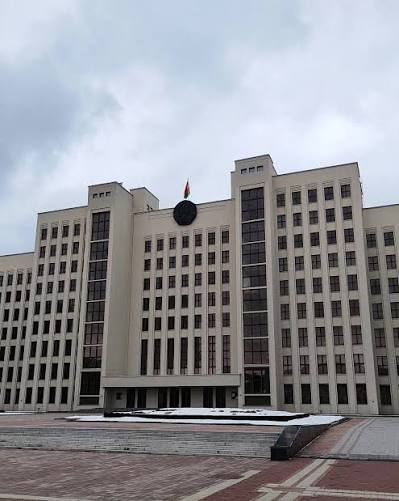

Двигай ползунок, чтобы увидеть, как выглядело это место в годы войны

Например: Это здание было построено в 1944 году как музей истории Великой Отечественной войны. Во время войны на этом месте находились разрушенные кварталы Минска. После освобождения города здесь началось восстановление столицы Беларуси.